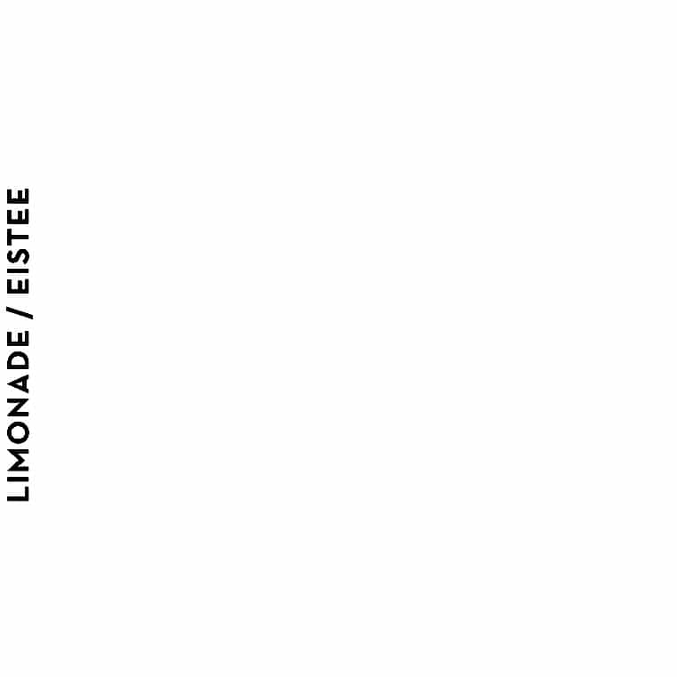
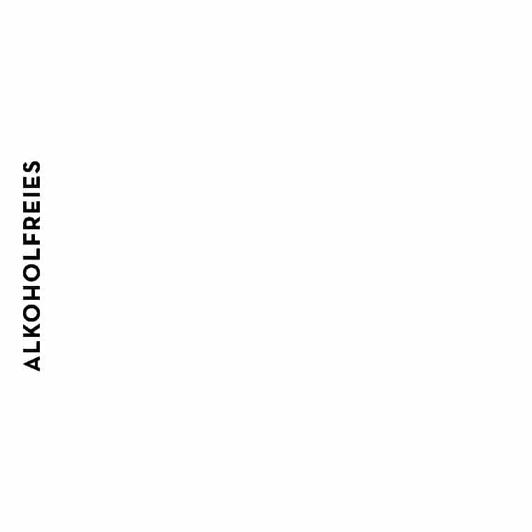
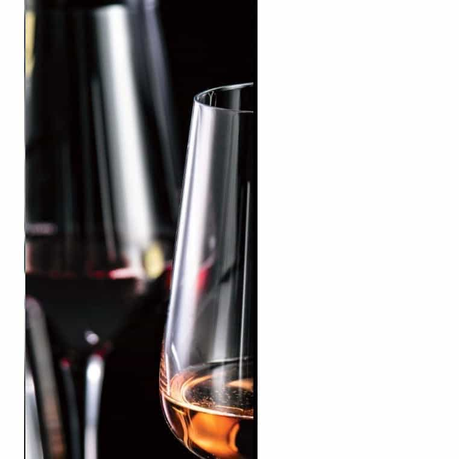
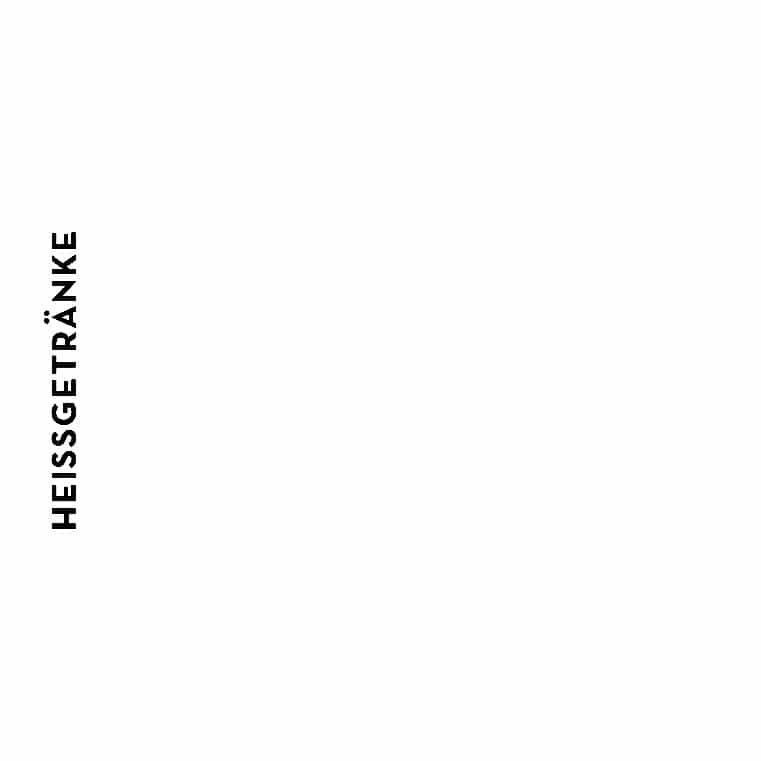

APERITIF
Moët Chandon
Moët
Moët Chandon
Impérial brut
N.I.R.
Impérial rosé
0,75 l 73,5
0,75 l 110,0
0,75 l 99,5
Crémant
Crémant
Paul Delane brut
Paul Delane rosé
0,1 l 5,9
- 0,75 l 35,0
0,1 l 6,5
- 0,75 l 39,0
Negroni
Manhattan
Tanqueray Gin - Antica Formula - Campari
Canadian Club Whisky - Antica Formula
9,9
Angostura
8,9
Bellini
Martini Parisien
Champagner - Peachtree - Pfirsichpüree
Tanqueray Gin - Antica Formula
10,5
Créme de Cassis
8,9
Lillet Berry
Lillet Vive
Lillet blanc - Beeren
Lillet blanc - Gurke - Minze
Thomas Henry Cherry Blossom
Thomas Henry Tonic Water
9,9
9,9
TYO TYO
SPECIAL DRINKS
Electric Fall
Asian Collins
Goslings Black Seal Rum - frischer Limetensaf - Kiwi
Roku Gin - Kiwi
- Zucker
Mandelsirup - Red Bull Tropical
Thomas Henry Soda Water
10,5
9,9
Mystic & Mango
Tyo Tyo Mule
Abuelo 7 - frischer Limetensaf
Kakuzo Earl Grey Vodka - frischer Limetensaf
Thomas Henry Mystic Mango
Thomas Henry Spicy Ginger
10,9
11,5
Mexican Matcha
Sake Highball
Jose Cuervo Tequila - frischer Limetensaf
Sake - Ingwer - Gurke
Matchasirup - Seicha Matcha Grapefruit
Thomas Henry Ginger Ale
10,5
9,9
Kyoto Fizz
Aurora
Sake - frischer Limetensaf - Zucker
Hendrick‘s Gin - Butermilch
Puderzucker - Orange Flower Water
frischer Limetensaf - Waldmeistersirup
Thomas Henry Soda Water
Zucker - Ahoibrause
9,9
12,0
TYO TYO
SPECIAL DRINKS
Gin Basil Highball
Dark & Stormy
Roku Gin - frischer Limetensaf
Goslings Black Seal Rum - frischer Limetensaf
Honigsirup - Soda Libre The Basil
Thomas Henry Spicy Ginger
10,9
10,9
Belsazar Rosé Tonic
Freie Seele
Rosé Vermouth
Alma Libre Mezcal - frischer Limetensaf
Thomas Henry Tonic Water
Thomas Henry Ultimate Grapefruit - Meersalz
9,9
11,9
Tea & Tonic
Bourbon Highball
Brockmans Gin - Waldbeertee - Beeren
Bulleit Bourbon
Thomas Henry Tonic Water
Thomas Henry Ginger Ale
12,0
9,9
Skin Gin Perfect Serve
Oh wie schön ist Panama
Skin Gin
Abuelo 7 - frischer Limetensaf
Ingwer/Orangenmarmelade
Zucker - Roh Kombucha Original
Thomas Henry Tonic Water - Rosmarin
10,9
13,5
TYO TYO
CLASSICS
Old Fashioned
Espresso Martini
Whiskey, Rum oder Tequila
Bazic Vodka - Espressolikör
Zucker - Angostura
Karamellsirup - Espresso
8,9
8,9
Japanischer Gimlet
Sour (s)
Nikka Coffey Gin
Whiskey, Pisco, Gin, Aperol oder Frangelico
frischer Limetensaf - Lime Juice Cordial
frischer Limetensaf - Zucker - Eiweiß
9,9
11,9
Shanghai Breeze
Daiquiri
Bazic Vodka - frischer Limetensaf
Abuelo 7 - frischer Limetensaf - Zucker
10,9
Litschi - Cranberry
9,9
GIN
Tanqueray
Nikka Coffey
2cl l 4,5
4cl l 7,9
2cl l 5,5
4cl l 9,9
Brockmans
Hendrick‘s
2cl l 4,9
4cl l 8,9
2cl l 5,5
4cl l 9,9
Jinzu
Skin Gin
2cl l 4,9
4cl l 8,9
2cl l 5,5
4cl l 9,9
Roku
Ki No Bi
2cl l 4,9
4cl l 8,9
2cl l 6,0
4cl l 10,9
Tanqueray Flor
Monkey 47
de Sevilla
2cl l 5,5
4cl l 9,9
2cl l 4,9
4cl l 8,5
Gin Sul
2cl l 5,5
4cl l 9,9
WHISK(E)Y
SPIRITUOSEN
Bulleit Bourbon
Martini Bianco
4cl l 6,9
4cl l 5,5
Glenmorangie Original 10
Belsazar Rosé Vermouth
4cl l 7,9
4cl l 6,9
Jack Daniels Old No. 7
Jose Cuervo Tequila
4cl l 7,9
Tradicional
4cl l 6,9
Chivas Regal 12
Nonino Grappa Chardonnay
4cl l 7,9
4cl l 6,9
LOT No. 40,
Canadian Rye-Whisky
Aalborg Jubiläums Aquavit
4cl l 9,9
4cl l 6,9
The Nikka 12
Hennessy VSOP
4cl l 15,9
4cl l 9,5
Jose Cuervo Tequila
Nikka Taketsuru
Platino
Pure Malt 17
4cl l 9,9
4cl l 19,9
Alma Libre Mezcal
Ardbeg 10
4cl l 9,9
4cl l 9,9
Redbreast 12
4cl l 9,9
VODKA
RUM
Kakuzo
Havana Club 3
2cl l 4,5
4cl l 7,9
2cl l 3,9
4cl l 6,9
Bazic Vodka
Abuelo 7
2cl l 3,9
4cl l 6,9
2cl l 4,5
4cl l 7,9
Bazic Pink Vodka
Goslings Black
2cl l 3,9
4cl l 6,9
Seal Rum
2cl l 4,5
4cl l 7,9
Belvedere
2cl l 4,9
4cl l 8,9
Havana Club 7
Absolut
2cl l 4,9
4cl l 8,9
2cl l 3,9
4cl l 6,9
Abuelo 12
Absolut Elyx
2cl l 4,9
4cl l 8,9
2cl l 5,9
4cl l 10,9
Zacapa 23
2cl l 6,9
4cl l 12,9
Ryoma 7
2cl l 7,9
4cl l 13,9

Red Night
Waldbeerlimo
Holunderblütensirup - Apfelsaf
Waldbeeren - Minze - frischer Limetensaf
Grenadine - frischer Limetesaf - Minze
Zucker - Thomas Henry Soda Water
Schwarzer Tee
0,4l l 6,9
0,4l l 5,9
wahlweise mit Rotwein
wahlweise mit Gin oder Vodka
+ 2,0
+ 4,0
oder Ginger Ale
Safari
Matcha Basil Limo
frischer Limetesaf
- frischer Orangesaf
Matcha Tee - Soda Libre The Basil
Zucker - Minze - Rooibos Tee
frischer Limetensaf - Agavensirup
0,4l l 5,9
Thomas Henry Soda Water
0,4l l 7,9
wahlweise mit Aperol
wahlweise mit Gin oder Vodka
+ 3,0
+ 4,0
GINwer
Litschi Erdbeerlimo
Siegfried Wonderleaf Gin alkoholfrei
Litschi - Erdbeere
Ingwersirup - frischer Limetensaf
frischer Limetensaf - Zucker
Roh Kombucha Ingwer-Limete
Thomas Henry Soda Water
0,3l l 7,9
0,4l l 6,9
wahlweise mit Gin oder Vodka
+ 4,0
Kombucha Hibiskus
Wonderleaf Tonic
Roh Kombucha Hibikus-rosa Pfeffer
Siegfried Wonderleaf Gin alkoholfrei
frischer Limetensaf - Grenadinesirup
Thomas Henry Tonic Water
0,3l l 6,9
0,4l l 8,5
ALKOHOLFREIES
Viva con Agua laut / leise
0,33l l 3,9
Viva con Agua laut / leise
0,75l l 6,9
Mit dem Kauf von Viva con Agua kannst du einen Teil dazu beizutragen mehr Menschen
den Zugang zu sauberem Trinkwasser zu verschaffen!
„Wasser für Alle - Alle für Wasser“
fritz-kola
kola - ohne zucker - mischmasch
limo zitrone - limo orange
0,2l l 3,0
Thomas Henry
Tonic Water - Biter Lemon - Ginger Ale
Spicy Ginger - Coffee Tonic - Cherry Blossom
Mystic Mango - Elderflower - Soda - Ultimate Grapefruit
0,2l l 3,5

Roh Kombucha
Original - Ingwer-Limete - Hibiskus-rosa
Pfeffer
0,237l l 5,0
Cucumis
Gurke - Lavendel
0,33l l 4,5
chari tea mate
0,33l l 4,9
Rauch Säfte
Apfel - Maracuja - Orange - Cranberry - Rhabarber
0,2l l 3,5
Seicha Matcha Grapefruit
0,33l l 4,5
Soda Libre The Basil
0,33l l 5,0
Red Bull Energy Drink
Red Bull
Red Bull Sugarfree
Red Bull Yellow Edition (tropical)
0,25l l 4,0
Paloma Pink Grapefruit
0,25l l 4,0
BIER
Landgang Pils vom Fass
0,3l l 4,0
Landgang Helle Aufregung
(tschechisches Helles - Lagerbier)
würzig - geschmackvoll - süffig und frisch im Abgang
0,33l l 4,5
Landgang Amerikanischer Traum
(India Pale Ale)
kräfig - bitere Fruchtnote von Citrus und roten Beeren
0,33l l 4,5
Landgang Der Kapitän
(smoked Porter)
alkoholfreies Pale Ale
0,33l l 4,5
Landgang Saisonales Bier
(wechselt, sprich uns an)
0,33l l 5,5
Tiger Beer
0,33l l 4,5
Erdinger / Erdinger Alkoholfrei
0,5l l 5,5
WEISSWEIN
Cuvée „Fusion“
Grauburgunder Spätlese
Weißburgunder, Sauvignon Blanc, Riesling
Hauck /Rheinhessen
Hofmann-Willems Willems /Rheinhessen
Birne - Pfirsich - fruchtig - schmelzig
cremig - safig - verspielte Restsüße
0,1l l 4,2
0,2l l 7,9
0,75l l 25,5
0,1l l 3,6
0,2l l 6,9
0,75l l 21,5
Sauvignon Blanc
Inkognito
Peth-Wetz /Rheinhessen
Scheurebe
frech - lebhaf - knackig
Mittwich / Nahe
0,1l l 4,4
0,2l l 8,5
0,75l l 28,5
frisch - fruchtig mit feiner Säure
0,1l l 4,5
0,2l l 8,6
0,75l l 24,5
Aufwind
Riesling
Muskatell, Sauvignon Blanc, Riesling
Neiss / Pfalz
Hensel /Pfalz
safig - frisch - lebendig
lebendig - frisch - mineralisch
0,1l l 3,4
0,2l l 6,5
0,1l l 5,5
0,2l l 10,40
0,75l l 33,5
WEISSWEIN
Weißer Burgunder „vom Löss“
Grauburgunder
Fogt / Rheinhessen
Gebrüder Kauer / Nahe
elegant - belebend - lässiges Fruchtspiel
aromatisch - fruchtig - elegant
0,75l l 23,5
0,75l l 27,0
„Saar Riesling“
Weiße Trinkfreu(n)de
Van Volxem / Mosel
Riesling
Zitrusfrucht - leicht - knackig
Ilonka Scheuring / Franken
0,75l l 43,0
erfrischend - fruchtig - floral
0,75l l 22,5
Weißburgunder im Eichenfass
Hensel & Gretel
Mittwich / Nahe
Grauburgunder, Weißburgunder
zarte Fruchtsüße - lebendige Frische
Hensel & Schneider / Pfalz
0,75l l 25,5
frisch - facetenreich - komplex
0,75l l 35,0
Private Bin
Wild Rock
Sauvignon Blanc
Sauvignon Blanc
Villa Maria / Marlborough
Wild Rock /Marlborough /Neuseeland
Neuseeland
schlicht begeisternd - prall - lebendig
frisch - komplex - exotisch
0,75l l 35,0
0,75l l 34,0
The Forgotten Vineyards
Am Berg
Chardonnay
Grüner Veltliner
Kruger Wines / Citrusdalberg / Südafrika
Ott / Österreich
elegant - komplex - vielschichtig
safig - erfrischend - fruchtig - pikant
0,75l l 29,0
0,75l l 32,0
VV Riesling
Genio y Figura
Weingut Van Volxem / Mosel
Albarino
süß - fruchtig - reife Säure
Attis Bodega y Vinédos
0,75l l 36,0
Rías Baixas / Spanien
elegant - mineralisch - Fruchtspiel
0,75l l 35,0
ROSÉWEIN
Horny Rosé „Stier“
Falco da Raza
Spätburgunder, Merlot, Cabernet Dorsa
Vinhao, Padeiro, Espadeiro
Hörner / Pfalz
Quinta da Raza / Vinho Verde / Portugal
beerig - frisch - süffig
fruchtig - wild - knackig
0,1l l 3,6
0,2l l 6,9
0,75l l 21,5
0,1l l 3,9
0,2l l 7,2
0,75l l 23,5
Rosabelle
AIX Rosé
Grenache Noir
Shiraz, Grenache, Cinsault
Le Cellier d‘Eole
Maison Saint Aix / Provence / Frankreich
Languedoc-Roussillon / Frankreich
wenig Säure & Tannine - feine Frucht
- knackig
fruchtige Dufnote - impulsiv - krafvoll
0,75l l 33,0
0,75l l 26,0
ROTWEIN
Rioja Crianca „Primicia“
Dadá
Tempranillo
Malbec
Terrabianca / Rioja / Spanien
Finca Las Moras
12 Monate Barrique - rustikale Textur
Mendoza / Argentinien
0,1l l 4,3
0,2l l 6,9
0,75l l 21,5
langer Nachhall - amerikanische Eiche
0,1l l 3,80
0,2l l 7,2
0,75l l 24,5
Miriade Tinto
Saint Cosme
Syrah, Merlot, Cabernet Sauvignon
Syrah
Pago de Vallegarcia / La Mancha
Château de Saint Cosme
Spanien
Côtes du Rhône / Frankreich
pfeffrige Note - Eleganz - Barrique
krafvoll - mineralisch - schwarze Beeren
0,75l l 39,0
0,75l l 35,0
12 Volts
Ste. Michelle Vineyards
Callet, Fogoneu, Cabernet Sauvignon,
Cabernet Sauvignon, Merlot
Merlot, Syrah
Washington State / USA
Bodegas 4 Kilos / Mallorca / Spanien Barrique - cremige Textur - volle Frucht
Süßholz - rote Früchte - zarte Tannine - viel Kraf
0,75l l 42,0
0,75l l 59,0
SAKE
Hatsumago Kimoto Junmai
Dewazakura „Kirschblüte“
Junmai, Kimoto/Yamahai
Ginjo
klassischer Junmai
hocharomatisch trocken und fruchtig,
mit gut strukturierter Säure - Würze
perfekt zu Fisch und Tempuragerichten
(warm serviert)
(kalt serviert)
0,1l l 8,5
0,1l l 10,5
Fukuju Kobe Classic
Amabuki Rhododendron
Junmai Ginjo
Junmai Daiginjo
mineralisch, vollmundiger und komplexer Sake
floral mit filigranem Umami,
leicht - feinherb - leichte Säure
optimal zu Fleischgerichten
(kalt serviert)
(kalt serviert)
0,1l l 11,0
0,1l l 13,5
JAPANISCHE LIKÖRE
Fukuju Yuzu-Sake-Likör
Amami-Oshima Umeshu-Likör
frische, leicht herbe Zitrussäure
Shochu-Pflaumenlikör auf Zuckerrohrbasis
(auf Eis serviert)
(auf Eis serviert)
10cl l 12,5
4cl l 6,5

LIKÖRE
Jägermeister
4cl l 5,5
Rhabbi Limes
4cl l 5,0
Baileys
4cl l 6,9
Frangelico
4cl l 6,9
Licör 43
4cl l 5,9
Sambuca
4cl l 5,9
Ramazzotti
4cl l 5,9

Café Crema
3,5
Cappuccino
3,7
Latte Macchiato
4,8
Espresso / Espresso Macchiato
2,9 / 3,2
doppelter Espresso / doppelter Espresso Macchiato
4,5 / 4,8
Bio Samova Tee
Darjeeling High Darling - Früchtetee Maybe Baby
Grüntee China Low Rider - Grüntee Jasmin Green Tea
Rooibos-Vanilletee Orange Safari - Kräutertee Gin Soul
0,4l l 4,0
Matchatee Star Dust
0,4l l 7,0
frischer Minz- oder Ingwertee
0,4l l 5,5
wahlweise mit laktosefreier Milch.
Unsere Mitarbeiter informieren gerne über Allergene und Zusatzstoffe.
Preise in Euro inkl. Mehrwertsteuer